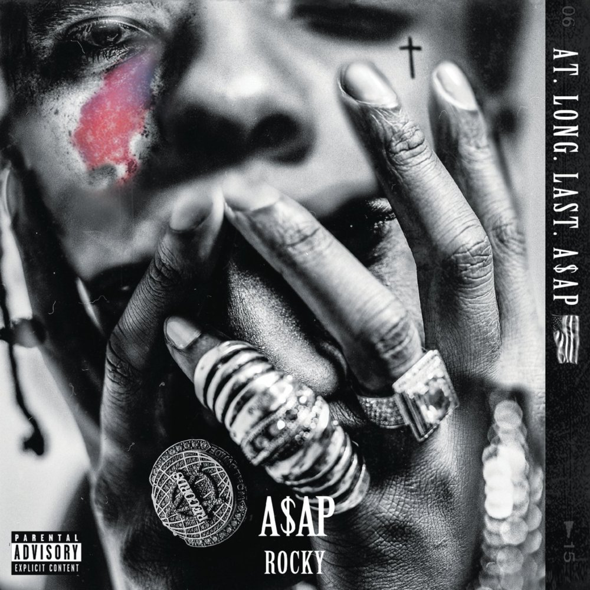

The A$AP is a rap collective that is based out of New York City. The Mob Features a bunch of of solo artists like A$AP Rocky, Ferg, Twelvyy, and Nast. Every year they collaberate to commerate the leader of the A$AP Mob, A$AP Yams who died in 2015. They call these collection of albums "The Cozy Tapes." Both of the currently existing Cozy Tapes feature a multitude of artits.
5/10
I would give this mixtape a 5/10 because although it really did display his early talkent and entry to the rap game, it was his first work.
This is the debut mixtape for A$AP Rocky in 2011 and his entry to thee rap game. This mixtape displayed his talents for the world and was free to download on launch. This made really made a name for himself as a proicibg rapper. His mixtape is one of the most celebrated ones on Datpiff, a website dedicated to the free spread of mixtapes, with over 1 million downloads.
9/10
I would give this album 9/10 for how much more it bring to the table in terms of features and unique style.
This Album was the debut album for A$AP Rocky in early 2013. Stylistically he brought alot ore to the table. He really displayed to his fanbase who he was in terms of skill and presentation. This album boasted hits like Goldie, 1 Train, and Wild for the night. Rocky established himself really as the lead artist on A$AP Mob.
